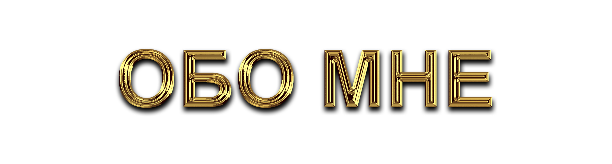
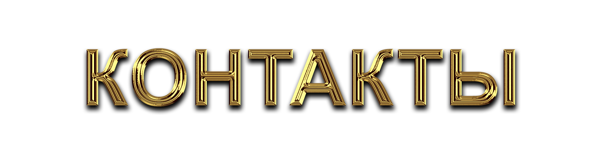
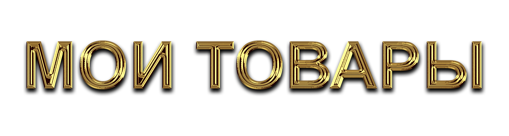
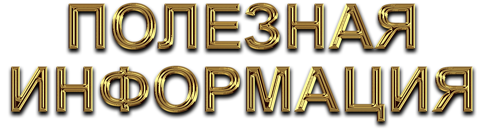
| 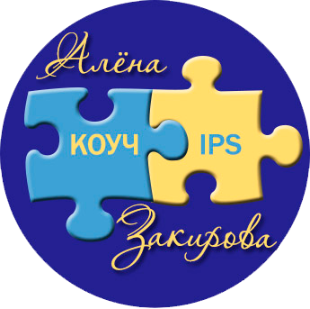 | ||
|
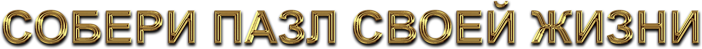 |
||
|
|
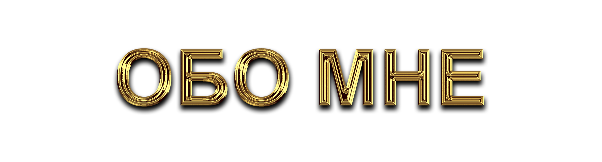 |
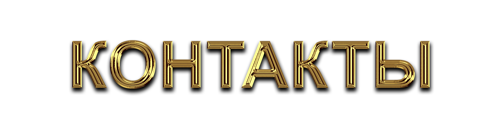 |
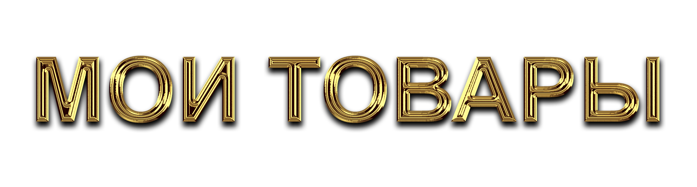 |
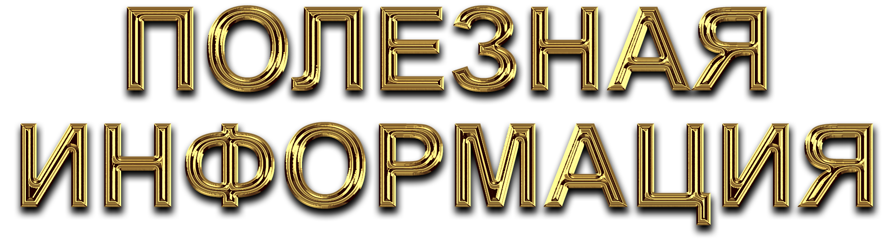 |
Ваш внутренний талисман успеха 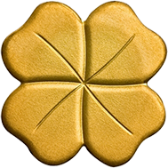
В жизни каждого из нас бывают ситуации, когда тяжело на душе, когда на пути к успеху возникает какое-то препятствие и мешает двигаться дальше. В такую минуту Вас лучше всего поддержит
техника "Клевер"
, которая включает в себя набор инструментов развития подсознания и поиска внутренних ресурсов для новых свершений! |
Его лепестки: | |
| 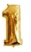 |
Позитивный девиз, который Вы придумываете для себя и повторяете вслух или мысленно при каждом удобном случае; |
Как создать? Вспомните, что отражает Вас и Ваше желаемое будущее. Выразите это короткой, но ёмкой фразой с яркой метафорой. Почувствуйте, как слова заряжают Вас энергией! Улыбнитесь, обязательно улыбнитесь и громко произнесите свой девиз вслух! Готово, пользуйтесь на здоровье. Примеры: "Моя жизнь - цветущий сад, полный плодов", "Я зажигалка - зажигаю жизнь вокруг себя", "Я генератор позитива! Поделюсь со всеми!", "Все было хорошо! Всё отлично! Всё будет лучше и лучше с каждым мгновением!". |
|
| 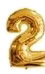 | Генеральная уборка в голове - работа с ограничивающими негативными убеждениями и отрицательными эмоциями; |
Как сделать? Мозг большинства людей представляет собой чердак, доверху заполненный негативными убеждениями о себе и окружающих, застарелыми обидами, отрицательными эмоциями и другим хламом. Наша задача - вычистить всё это на помойку, сбросить балласт и свободно лететь навстречу богатству и радости! 1 ЭТАП. Выявляем и вычищаем мусор. Для этого подумайте, что Вас сейчас тревожит, что мешает двигаться вперёд, в чём причина проблем и неудач. Не вините окружающих людей или "систему", примите ответственность на себя. Не "Иванов помешал мне", а "Я не смог(ла) противостоять Иванову, потому что…". Сформулируйте ограничивающие убеждения в словах и предложениях, составьте список по каждой теме: о себе, о деньгах, о семейной жизни, о здоровье, о путешествиях и т. д. 2 ЭТАП. Создаём и используем аффирмации. Теперь замените каждую тяжелую, чёрную, негативную фразу новой, светлой и вдохновляющей! Например, "я часто болею" на "Моё тело сильное, стройное и здоровое! Моё здоровье улучшается с каждым днём, а возраст идет мне только на пользу!". Повторяйте эти позитивные убеждения как можно чаще вслух или про себя. Можно также наговорить на диктофон и прослушивать в формате аудио. Ваш голос даже в записи способен творить чудеса с Вашим подсознанием! Через 21-40 дней Вы себя не узнаете! Чистая и светлая голова изменит Вашу жизнь к лучшему и выведет Вас на качественно новый уровень! |
|
| 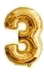 | Закладка мыслей и визуализация успеха - мощнейший инструмент перепрограммирования сознания и приближения результата; |
Как делать? Как можно отчётливее представьте себе результат, к которому Вы движетесь. Подключите эмоции и образы. Каким Вы станете, когда достигнете своей цели? Кто и что Вас будет окружать? Как будет чувствовать себя Ваше тело? Какие мысли и чувства у Вас возникнут? Представляйте себе это как можно полнее, как будто это происходит здесь и сейчас. Такая визуализация перепрограммирует Ваше подсознание и даст ресурсы и мотивацию для исполнения Вашей мечты! Пример использования: когда я хотела выиграть тренинг "Путь Бабочки", где надо было ходить по углям, я в течении 2 недель представляла как я хожу по этим углям и подключала эмоции. Шла по ковру и ощущала, как по ногам поднимается жар снизу до верху. Ух, сильное было ощущение. И естественно после такой закладки мыслей я выиграла тренинг! |
|
| 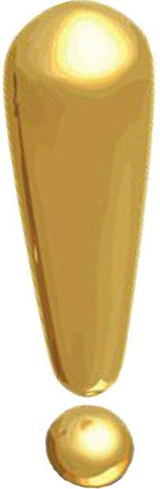 | Подробнее про метод "Закладка мыслей" вы можете прочитать в моей книге: |
| 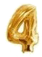 | Медитации - эффективный инструмент, способный позитивно настроить Ваше подсознание, чтобы оно помогло Вам воплотить свои мечты и желания в реальность. |
| В результате ее применения Вы освободитесь от негативных убеждений, расширите границы восприятия мира, обратите внимание на возможности, которых вы раньше не замечали, и начнете активно действовать на достижение своей цели. И, наконец, медитация - это необыкновенно приятно: тело расслабляется, душа отдыхает, настроение и здоровье многократно улучшаются. | |
| Скачать самые лучшие аудиопрограммы для медитаций Вы можете здесь и здесь по удивительно низкой цене. |
|
Используйте технику "Клевер" как можно чаще! Каким бы ни был плотным Ваш график, Вы всегда сможете выделить и посвятить себе 10-15 минут для того, чтобы прислушаться к своему подсознанию, возобновить, в памяти свои планы на будущее, запустить положительные эмоции или помедитировать. Такой четырёхлистный клевер гарантированно поможет Вам достичь любой цели легко и с удовольствием! Ваш коуч Алена Закирова, специалист по работе с подсознанием. |
 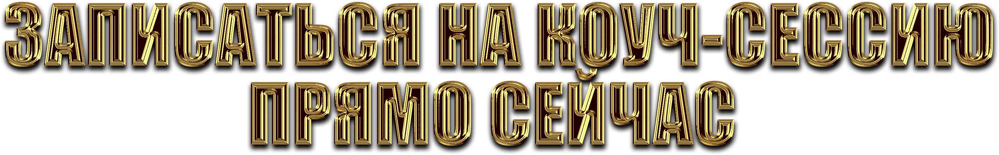 |